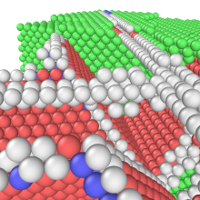
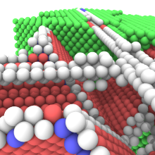
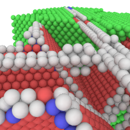
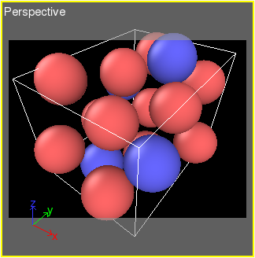
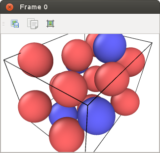

| Table of Contents | Rendering images and movies | Up |
|---|---|---|
| Prev | Usage | Next |
| Table of Contents | Rendering images and movies | Up |
|---|---|---|
| Prev | Usage | Next |
OVITO can produce images and movies for publications and presentations. This is done from the Render tab of the command panel as shown on the right.
The rendering tab contains the Render settings panel, which lets you control various aspects of image generation like the output resolution and the background color. The button starts the rendering process for the viewport that is currently active. OVITO will open a window to display the generated image, which can be saved to disk or copied to the clipboard. You can optionally specify an output filename beforehand in the Render settings panel, under which the generted image or movie will be saved.
OVITO provides several different rendering engines you can choose from. The default one is the OpenGL renderer, which is also used by the interactive viewports for real-time display. This renderer is very fast and produces pictures that are more or less identical to what you see in the interactive viewports. An alternative option is the Tachyon renderer, a software-based raytracing engine. It can generate high-quality rendering including shadows, ambient occlusion shading and depth of field. But it typically takes much longer to generate an image with this renderer. A third option is the POV-Ray rendering backend, which offloads the rendering to the external POV-Ray raytracing program, which must be installed on your computer.
| OpenGL renderer: | Tachyon renderer: | POV-Ray renderer: |
 |  |  |
When a simulation sequence has been loaded into OVITO, the program can render an animated movie of it and save it to a video file. Select Complete animation in the Render settings panel and set a file name and encoding format for the output video. OVITO's built-in video encoder supports common video formats such as AVI and MPEG.
To set the playback speed (frames per second) of the output video, click the Animation settings button. Alternatively, you can produce a series of image files, one per frame, and combine them to a video later using an external video encoding tool. More information on OVITO's animation capabilities can be found here.
| Interactive viewport (preview mode): | Rendered image: |
 |  |
To preview the precise area of the active viewport that will be visible in the rendered image or movie, you can activate the for this viewport. This option can be found in the viewport menu, which can be opened by clicking the viewport's caption in the upper left corner.